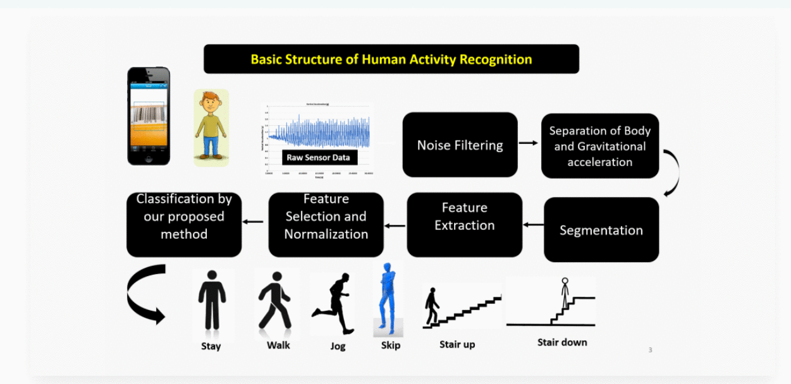
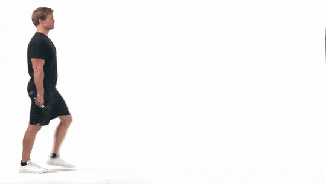
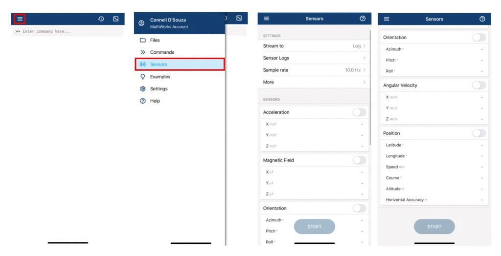
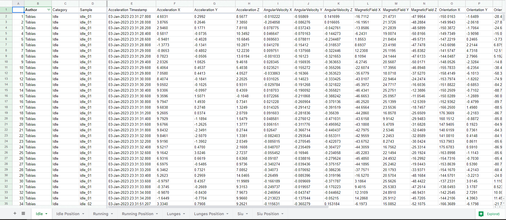

Human Activity Recognition
Introduction
This project is based on detecting Human Activity using Machine Learning Models.
The structure of the project is classification of human motion data using a Smartphone.
The smartphone application used for gathering the samples is called MATLAB
Project Structure
Problem Modelling
Classification of human motion data
- Record data from different movements using MATLAB
- Preprocess the data
- EDA
- Classification & Evaluation of the model
- Interpret results
Create a Shiny-App Dashboard with important facts of the project
Conclusions
Problem Modelling
There are 4 human movements that are going to be classified. 2 movements are simple ones and the other 2 are more “creative”.
The following movements were commonly decided:
- Normal Movements
- Idle
- Running
- Creative Movements
- Lunges

- Siu [Ronaldo’s goal celebration]

MATLAB Mobile
MATLAB Mobile is a lightweight desktop on your iPhone/Android that connects to a MATLAB session running on the MathWorks Computing Cloud or on your computer. For example, from the convenience of your iPad, you can run scripts, create figures, and view results.
For the scope of the project, each of us recorded all the data available using Sensors feature for:
- Acceleration
- Angular Velocity
- Orientation
- Position

Every of us has recorded each of specific movement for 5 to 10 seconds or as a long interval for 1 minute.
After recording the data, we will automatically have the values stored on MATLAB Drive in a .mat file extension.
Each movement has 4 different tables for each feature recorded.
Preprocess the data
Each feature records had three columns for different coordinate X , Y , Z.
Then we copied each data frames to an excel file on Google Drive in order to merge all the samples in different Excel tables for each movement.

Downloaded the Excel files as CSV for R Studio.
Preprocess the samples and clean the data
- Join all the type of movements into one dataframe
- Delete unwanted columns (Orientation[X, Y, Z], MagneticField[X, Y, Z], Sample, Acceleration Timestamp)
- Encode the categorical/nominal data
EDA (Exploratory Data Analysis)
- Inspect the data
- Observe the features and number of observations
- Detect NA values
- Investigate the statistical analysis (min, Q1, median, Q3, max, mean, sd, n and type values)
Delete the observations with missing values if there are enough samples
Create plots for:
- Distribution of the data based on movement category
- Correlation for feature selection
Classification model
- We partitioned the dataset into 80-20 (80% training, 20% testing)
- Create a Scree plot in order to visualize what is the best number of features used for our modelling
- Used the following algorithms for the training model in order to predict Category feature based on [FEATURES]:
- Rpart (BST - Binary Decision Trees)
- KNN (K-Nearest Neighbour)
- Random Forests
- Use the training set for prediction of our Category feature: CLICK!!!
Interpretation of results
- The results of our training models are the following:
- The results of the test sample are the followings:
Conclusions
- The project was straight forward, even though we faced some troubles with data preprocessing and problem modelling
- The processes during the project were clear and we could manage also further investigations for future research of this project
- Different ideas of classification models
- Unsupervised learning methods for Human Activity Recognition
- Other presentation techniques
- Multiple team meetings were created for brainstorming and teamwork.